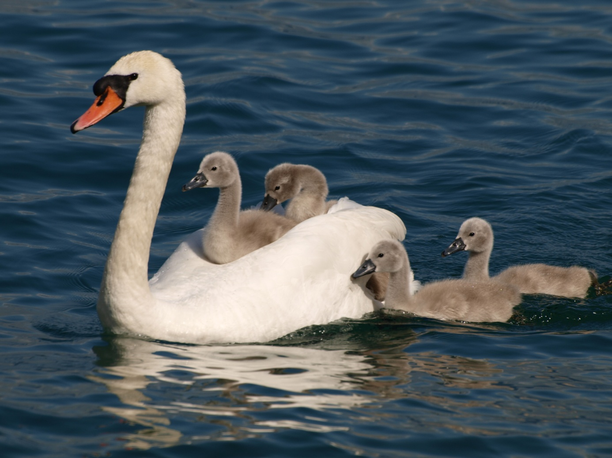

C’est de l’amour que naît tout sens de notre vie. Ainsi pour permettre à l’être humain, de petit à petit, mieux se comprendre et mieux se connaître, nous allons aborder l’amour et ses différents aspects en relation avec la notion des 3 corps. Pour atteindre l’équilibre, faisons de l’homme un être pleinement humain (avoir) et pleinement universel (être). Pour cela, nous avons besoin de nourriture terrestre pour construire et entretenir notre corps physique et d’une nourriture spirituelle pour faire croître le corps de l’être. Toute la question sera d’être ou ne pas être. La finalité première d’un être, c’est d’être et la souffrance majeure, c’est de ne pas être. Être, c’est avoir l’impression de se suffire à soi-même, de n’avoir rien à faire pour prouver qui on est ; d’agir, de ressentir et de penser en fonction de ce que « JE SUIS » (le SOI) et non en fonction de la volonté de quelques personnes (père, mère, curé, instituteur, femme, mari, etc.,) et/ou d’une quelconque organisation (famille, église, état, parti politique, secte, etc.). La loi qui régit l’univers et par conséquent l’homme, est celle de l’amour agape. La loi générale des systèmes, loi scientifique, nous informe que tout système qui n’obéit pas à la loi le régissant s’autodétruit.

Dans notre façon physique, humaine d’aimer, nous devons bien avoir conscience que c’est toujours donnant, donnant. Nous aimons pour être aimés, nous sommes structurés psychologiquement ainsi. Notre façon d’aimer les autres est proportionnelle à notre soif d’aimer. L’autre est l’objet de nos désirs. Derrière tous nos désirs se profile le désir de plénitude, d’infini. En fait, nous projetons sur l’autre le désir qu’il comble nos attentes d’infini. Arrêtons de lui demander d’être Dieu, de combler tout l’amour qui nous a manqué (l’amour de notre père, de notre mère…) Nous sommes bien dans la projection, nous demandons à un être humain d’être le tout, d’être l’infini qu’il n’est pas. Donc, ne pas faire de l’autre un objet, mais ne pas se faire non plus l’objet de l’autre. C’est l’amour attachement. En grec, c’est l’amour porneïa. C’est l’amour du bébé pour sa mère, en précisant que bébé n’aime pas sa mère, mais son sein, son lait, sa chaleur, l’objet maternant. Ceci est normal pour un bébé, mais consommer le monde comme un bébé montre bien souvent que nous ne sommes pas encore sortis de cette relation d’attachement, y compris en tant que parents qui n’ont pas fini de consommer leurs enfants. Il existe des façons d’aimer très affectives, très généreuses, mais qui cache une voracité à peine croyable : « je lui ai tout donné, ma vie, mon cœur, mon corps », mais qu’avons-nous donné ? Peut-être quelque chose que l’autre ne voulait pas. L’obstination de l’ego (le moi-je) qui veut la vie à son idée, en manipulant l’autre va s’exprimer par l’excès d’attachement. C’est une fixation pathologique sur un objet (autant les êtres que les choses) dans la possession duquel le désir pense trouver son assouvissement ou son repos. Quand l’objet nous échappe, cela fait naître de la souffrance dans le corps et dans l’âme. Penser posséder un objet, une personne, notre propre corps et même notre propre vie est une illusion. L’attachement établit un rapport de pouvoir, de dépendance, qui peut aboutir au harcèlement moral, au crime et à la guerre.
C’est donner inconditionnellement, positivement, sans rien attendre en retour. C’est l’amour de surabondance, gratuit, l’amour pour rien, l’amour absolu. Il est d’essence universelle. Le signe pour savoir si nous le vivons, sera d’aimer nos ennemis… être capable d’aimer ceux qui ne nous aiment pas, d’aimer ceux qui nous méprisent. Là, nous touchons une réalité, qui n’est pas de ce monde, nous touchons l’universel en nous. L’ego s’ouvre au SOI, car l’ego est incapable d’aimer ses ennemis. Par conséquent, au stade actuel de notre évolution, sauf pour les saints et les sages, nous n’arrivons pas à atteindre cet amour universel, mais nous pouvons seulement tendre vers.
La parole du Christ devient alors compréhensible, lorsqu’il dit : « mon royaume n’est pas de ce monde », c’est-à-dire qu’il y a quelque chose qui n’est pas du monde visible, qui n’est pas du donnant, donnant, qui ne se mérite pas, qui ne s’achète pas. Cette expérience de la gratuité nous donne de participer à un être qui est gratuité : c’est l’amour agape par opposition à l’amour attachement. Alors en humanisant notre définition, nous dirons qu’aimer sera arrivé à offrir le maximum sans attendre grand-chose en retour. La connaissance de soi nous permettra d’atteindre cet objectif et d’éviter la dépendance aux autres, car le dévouement peut nous attacher à autrui et nous conduire à l’épuisement. Pour aimer l’autre, nous devons nous aimer nous-mêmes et non se dévouer à lui, pour qu’il nous aime.
Il s’agira donc bien de s’exercer à pratiquer l’amour agape ; de s’exercer à faire des choses gratuites, à aimer pour rien, à aimer ceux qui ne vous aiment pas. Vous expérimenterez alors la prise de conscience de votre nature spirituelle. Mais avant d’essayer d’aimer nos ennemis, devant la difficulté de la tâche, essayons déjà la voie du non-agir : oui, nos ennemis ont le droit que nos têtes ne leur reviennent pas et le droit de ne pas nous aimer. Mais pour accéder à cela, il faut déjà avoir bien œuvré à pacifier son ego, car le bébé frustré en nous demande tellement à être aimé, qu’il n’est pas content du tout. En clair, ce que nous devrions aimer chez l’autre, ce n’est pas seulement ses grandes qualités, mais aussi ses défauts, ses faiblesses, sa bêtise… aimer l’être limité, l’aimer tel qu’il est. Cela n’est possible que si nous nous aimons tels que nous sommes. Nous détestons notre prochain comme nous nous détestons nous-mêmes.
Pour l’enfant, l’attachement à la mère est nécessaire et sera une des conditions d’un bon développement psychologique et psychique. Le comportement de la mère sera bénéfique s’il permet à l’enfant d’être lui-même et d’exploiter ses propres potentialités. Pour cela, la mère travaillera sur le non-attachement et la séparation pour leur permettre à tous deux de réaliser leur percée vers l’être essentiel et le monde de l’esprit.
Aimer au niveau du couple, lorsque nous avons perdu le goût de nous approprier qui que ce soit, est alors aspiration à la liberté d’autrui. « Va vers toi-même », dit le bien-aimé à la bien-aimée du Cantique des Cantiques. Il ne veut plus de la bien-aimée comme une moitié qui lui manquerait, mais comme une altérité qui lui demande de se remplir elle-même et d’accéder à sa propre plénitude. L’amour devient alors une dualité surmontée. Cela suppose que nous avons trouvé notre autre moitié à l’intérieur de nous-mêmes et que nous ne la projetons plus au-dehors sur notre propre partenaire.
L’amour absolu, inconditionnel, agape sera :
Mathieu 7, 1 : Ne jugez pas, car du jugement dont vous jugez, vous serez vous-même jugé. C’est la mesure dont vous vous servez qui servira pour vous.
Ceci se confirme scientifiquement 2’000 ans après par les lois de la mécanique quantique. Tout est boomerang.
La thérapie se servira du tiers incluant et son application sera réalisée par le corps psychique.
C’est la voie du milieu, de la synthèse que nous pourrons alors entreprendre : une médiation entre le visible et l’invisible, le monde des corps matériels et le monde des esprits immatériels.
La seule liberté de l’homme pour devenir lui-même est de conjuguer en lui le fini et l’infini. Au lieu de tenter la synthèse des extrêmes, il fuit dans un des extrêmes, en cherchant à tout prix à éliminer l’autre.